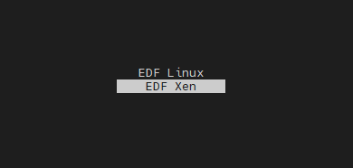

Xen Kria SOM Starter Kits Support¶
Xen is a free and open-source hypervisor, providing services that allow multiple computer operating systems to execute on the same computer hardware concurrently. Starting from 2023.2 - Kria Starter Kit Petalinux BSP, as well as Yocto, contains support for Xen. AMD specific details about XEN hypervisor can be found on this Wiki page.
This page documents how to generate Xen artifacts (based on Kria Starter Kit embedded Linux) for Kria and provides an example on how to boot Ubuntu as a guest OS (that is, a DOMU) on a Xen DOM0. This particular combination requires about 4 GB of memory, which K26 has. Therefore, this can be done on either the KV260 or KR260. The K24 only has 2 GB of memory, so Xen is not supported.
Prerequisites¶
Experience and equipments booting a regular Kria Starter Kit embedded Linux on Kria SOM Starter Kit (follow Getting Started with PetaLinux on the KV260, but use a
.wicimage from the 2023.2 BSP for your Starter Kit on a minimum 16 GB SD card)A Linux Desktop to create and program partitions
Yocto (preferred) or PetaLinux tool
Xen in 2026.1 and newer¶
Generating Xen Artifacts¶
In 2026.1 and newer, the platform-disk-image-kria recipe for amd-cortexa53-mali-common generates a platform wic image that supports both Xen and Open AMP. Therefore no other steps are required.
Prepare the SD Card¶
Flash the embedded Linux .wic image (either generated from Yocto or use released prebuilt image) using Balena Etcher. This sets up the SD card to contain three partitions:
partition 1 fat32 partition with boot images (accessible by Windows and Linux)
partition 2 fat32 partition that is mounted as /storage on target (accessible by Windows and Linux)
partition 3 (ext4) with the Kria Starter Kit embedded Linux rootfs that has been expanded to full disk space.
Boot Xen On Target¶
Plug the SD card into the Starter Kit and turn on the power. Select XEN at boot menu.

Next, copy over the Ubuntu image that you want to boot as DOMU. Download the iot-limerick-kria-classic-desktop-2204-x07-20230302-63-system-boot.tar.gz file from the Kria Ubuntu download site,uncompress it, and copy the image.fit file into target file system and extract the Ubuntu kernel image:
dumpimage -T flat_dt -p 0 <path to image.fit> -o /home/amd-edf/ubuntu_Image
DOM guests needs a location to keep its rootfs. There are options on where to put this. User could re-generate the wic image with P3 expansion disabled, and then create a P4 dedicated to domU rootfs. Or User could keep domU rootfs on file-backed virtual disk for the guest. The Ubuntu .ext4 rootfs image is already a complete filesystem image, so it can be used directly as a disk file referenced by the Xen guest config. In this example for 2026.1, we put domU rootfs on a file-backed virtual disk. Refer to instructions for 2025.2 and older XEN boot for examples of running from a disk partition.
Download the Ubuntu rootfs for DomU. Download the Ubuntu image from Kria Ubuntu download site. For this example, the iot-limerick-kria-classic-desktop-2204-x07-20230302-63-rootfs.ext4.xz file is used.
Move the file to target and unzip the to .ext4 using the following:
xz -d iot-limerick-kria-classic-desktop-2204-x07-20230302-63-rootfs.ext4.xz
Boot Ubuntu as DOMU¶
First, change to root:
sudo -s
Move the .ext4 image file to a location on dom0’s own filesystem :
mkdir -p /var/lib/xen/images
mv iot-limerick-...-rootfs.ext4 /var/lib/xen/images/ubuntu-guest.ext4
Next, check how much memory is dom0 consuming and the available memory using xl info. In this example, there should be a little more than 1.9G left to use for DOMU. Therefore, you can allocate 1900 MB for DOMU in the next step.
Create a guest0.cfg file with the following content:
name = "guest0"
kernel = "/home/amd-edf/ubuntu_Image" # Ubuntu Kernel extracted
# disk = ['/dev/mmcblk1p4,,xvda'] # Ubuntu Rootfs in partition 4 - if domU is in partition 4 on KV260
# disk = ['/dev/sda4,,xvda'] # Ubuntu Rootfs in partition 4 - if domU is in partition 4 on KR260
disk = ['file:/var/lib/xen/images/ubuntu-guest.ext4,xvda,w']
extra = "console=hvc0 root=/dev/xvda"
memory = 1900 # This can be increased if there is more free memory.
vcpus = 2
Start guest0/DOMU using:
xl create -c guest0.cfg
This boots to root@ubuntu.
To get out of DOMU, press ctrl-].
After getting out of DOMU, in XEN DOM0 prompt, rnter xl list to see a list of operating systems running similar to the following:
xilinx-kv260-starterkit-20231:/home/petalinux# xl list
Name ID Mem VCPUs State Time(s)
Domain-0 0 2048 1 r----- 17916.8
guest0 1 1899 2 r----- 28894.7
To access the guest0 DOMU again, do xl console <ID>
To kill the guest0 DOMU, identify the xl destroy <ID>.
Another DOMU session can be started without having to reboot Xen.
Kria Starter Kit Embedded Linux as DOMU¶
To run Kria Starter Kit embedded Linux instead of Ubuntu as DOMU, the steps are similar to that of Ubuntu OS as DOMU, except for the kernel image and rootfs artifacts for the perspective OS and the config file. There only two artifacts required in this example. In the image folder from Yocto generate, copy the Image file as kernel image and rootfs.cpio.gz file as disk image. The rest of the instructions are the same as that for Ubuntu as domU.
Xen in 2025.2 and older¶
Expand for Xen in 2025.2 and older
Generating Xen Artifacts¶
Xen artifacts can be generated by native Yocto tool flow or found in the PetaLinux BSP. You can choose to use one of the tools to create Xen artifacts.
Generating Xen Artifacts in the Native Yocto Tool Flow¶
First, set up a Yocto project on a host with Yocto support using the instructions here, stop after the source setupsdk step.
Then, to enable Xen, append the following to the end of build/conf/local.conf:
for 2024.1 and older, append the following:
BOOTMODE = "xen"
IMAGE_INSTALL:append = "packagegroup-petalinux-xen"
ENABLE_XEN_DTSI = "1"
ENABLE_XEN_QEMU_DTSI = "1"
ENABLE_XEN_UBOOT_SCR = "1"
XEN_SERIAL_CONSOLES = "serial1"
from 24.2 and onward package group name was changed, append the following instead:
BOOTMODE = "xen"
IMAGE_INSTALL:append = "packagegroup-xen"
ENABLE_XEN_DTSI = "1"
ENABLE_XEN_QEMU_DTSI = "1"
ENABLE_XEN_UBOOT_SCR = "1"
XEN_SERIAL_CONSOLES = "serial1"
Then, build the image the usual way:
To generate Xen support for KV260, use k26-smk-kv as the <machine name>:
MACHINE=k26-smk-kv-sdt bitbake kria-image-full-cmdline
# or in older tools:
MACHINE=k26-smk-kv bitbake kria-image-full-cmdline
To generate Xen support for KR260, use k26-smk-kr as the <machine name>:
MACHINE=k26-smk-kr-sdt bitbake kria-image-full-cmdline
# or in older tools:
MACHINE=k26-smk-kr bitbake kria-image-full-cmdline
There is no Xen support for the combined MACHINE name k26-smk.
In the Yocto project, the Yocto generated .wic that contains Xen support is found in <yocto_project>/build/tmp/deploy/images/<machine name>/kria-image-full-cmdline-<machine name>*.wic.
Xen Artifacts in PetaLinux Tool Flow¶
Use the Yocto flow because the flow is verified and steps are simpler in the Prepare the SD Card stage. If you must use PetaLinux, download a 2023.2 version or later Kria SOM Starter Kit BSP. Extract the PetaLinux project:
petalinux-create -t project -s xilinx-<hardware>-<version>-<timestamp>.bsp
cd xilinx-<hardware>-<version>
The .wic image required is in pre-built/linux/images/petalinux-sdimage.wic.xz, and the Xen artifacts required are found in pre-built/linux/xen.
Prepare the SD Card¶
Flash the embedded Linux .wic image from either Yocto or PetaLinux flow to an SD card using Balena Etcher. This sets up the SD card to contain two partitions: partition 1 with boot images (accessible by Windows and Linux) and partition 2 with the Kria Starter Kit embedded Linux rootfs (not accessible by Windows) that is also used for XEN DOM0. A third partition is created to house the DOMU rootfs.
Partition 1¶
If you are using a Yocto generated .wic image, partition 1 already contain Xen artifacts because the .wic is generated with Xen support.
PetaLinux tool flow only: Open the SD card on a host computer (can be Windows or Linux), go to partition 1, remove the boot images on that partition, and copy all the Xen artifacts in pre-built/linux/xen into partition 1.
Next, copy over the Ubuntu image that you want to boot as DOMU. Download the iot-limerick-kria-classic-desktop-2204-x07-20230302-63-system-boot.tar.gz file from the Kria Ubuntu download site, uncompress it, and copy the image.fit file into partition 1 for DOMU later. This file is not being used in Xen booting but is place in partition 1 as a way to transfer the file onto target.
Partition 2¶
Partition 2 was programmed with a Kria Starter Kit embedded Linux rootfs from setting the SD card image with the Kria Starter Kit embedded Linux .wic image. This can be reused for Xen.
Additional Partition¶
In this step, an additional partition is created to host the DomU root filesystem (rootfs). In this example, the rootfs is placed on partition 3. However, depending on the partition layout generated by the WIC image, the rootfs partition may instead be assigned to partition 4, 5, or another subsequent partition number.
This step needs to be done on a Linux host.
Download the Ubuntu rootfs for DomU. Download the Ubuntu image from Kria Ubuntu download site. For this example, the iot-limerick-kria-classic-desktop-2204-x07-20230302-63-rootfs.ext4.xz file is used.
Unzip the downloaded rootfs file to .ext4 using the following:
xz -d iot-limerick-kria-classic-desktop-2204-x07-20230302-63-rootfs.ext4.xz
Plug the SD card into a Linux host machine. In this example, it is assumed that the SD card is found in /dev/sda, but you can find it in different file path depending on your machine. Observe the two partitions with sudo fdisk -l /dev/sda; it should look similar to the following with two partitions:
Device Boot Start End Sectors Size Id Type
/dev/sda1 * 8 4194311 4194304 2G c W95 FAT32 (LBA)
/dev/sda2 4194312 12582919 8388608 4G 83 Linux
Enter the sudo fdisk /dev/sda command, and enter n to create a new partition. You are prompted about the partition type, enter p, next for the Partition number, hit Enter or enter the number 3. Finally, for First and Last Sector, hit Enter to automatically create a partition with all remaining storage on the SD card.
Now, it should look similar to the following:
Command (m for help): n
Partition type
p primary (2 primary, 0 extended, 2 free)
e extended (container for logical partitions)
Select (default p): p
Partition number (3,4, default 3): 3
First sector (12582920-31116287, default 12584960):
Last sector, +sectors or +size{K,M,G,T,P} (12584960-31116287, default 31116287):
Created a new partition 3 of type 'Linux' and of size 8.9 GiB.
Next, enter w to write the partition table and exit.
Next, format the newly created partition to support ext4 rootfs. Use following command to format it to a .ext4 format:
sudo mkfs.ext4 -L root /dev/sda3
/dev/sda3 is the path for new partition that is used for rootfs for DOMU. Run sudo fdisk -l again to verify all the partitions. It should look similar to the following with three partitions:
Device Boot Start End Sectors Size Id Type
/dev/sda1 * 8 4194311 4194304 2G c W95 FAT32 (LBA)
/dev/sda2 4194312 12582919 8388608 4G 83 Linux
/dev/sda3 12584960 31116287 18531328 8.9G 83 Linux
Finally, copy the Ubuntu rootfs you downloaded and extracted earlier to partition /dev/sda3:
sudo dd if=iot-limerick-kria-classic-desktop-2204-x07-20230302-63-rootfs.ext4 of=/dev/sda3
TIP: If dd gives produces the “No space left on device” error but the file is smaller than the space allocated, do the following:
sudo rm /dev/sda3
sudo fdisk /dev/sda # enter "D" and then "3" to delete partition 3
#then remove the SD card and reinsert and go back to the beginning of this section to start from creating partition 3 again.
Now partition 3 is also ready.
Boot Xen On Target¶
Plug the SD card into the Starter Kit and turn on the power. If you used Yocto to generate the Xen artifact, Xen is automatically booted; you can move to the next section.
If you use PetaLinux to generate Xen artifacts, you automatically get to the U-Boot command prompt. Enter this to load xen_boot_sd.scr to 0xc00000 and source the script to boot Xen:
For KV260, SD card is on mmc, so use the following commands to boot:
load mmc 1:1 0xc00000 xen_boot_sd.scr #KV260 only!
source 0xc00000
For KR260, the SD card is on a USB, so use the following commands to boot:
load usb 0 0xc00000 xen_boot_sd.scr #KR260 only!
source 0xc00000
This boots the Kria Starter Kit embedded Linux XEN (DOM0).
Boot Ubuntu as DOMU¶
First, change to root:
sudo -s
In /boot, you should find the image.fit file that was put there in step 1. The location and file name can vary depending on the release and tool used. You can search for it using find / -iname "image.fit".
Extract the Ubuntu kernel image:
dumpimage -T flat_dt -p 0 /boot/image.fit -o /home/<distro>/ubuntu_Image
Next, check how much memory is dom0 consuming and the available memory using xl info. In this example, there should be a little more than 1.9G left to use for DOMU. Therefore, you can allocate 1900 MB for DOMU in the next step.
Create a guest0.cfg file with the following content:
If running Xen on KV260:
name = "guest0"
kernel = "/home/<distro>/ubuntu_Image" # Ubuntu Kernel extracted
disk = ['/dev/mmcblk1p3,,xvda'] # Ubuntu Rootfs in partition 3
extra = "console=hvc0 root=/dev/xvda"
memory = 1900 # This can be increased if there is more free memory.
vcpus = 2
If running Xen on KR260:
name = "guest0"
kernel = "/home/<distro>/ubuntu_Image" # Ubuntu Kernel extracted
disk = ['/dev/sda3,,xvda'] # Ubuntu Rootfs in partition 3
extra = "console=hvc0 root=/dev/xvda"
memory = 1900 # This can be increased if there is more free memory.
vcpus = 2
Next, check if /dev/mmcblk1p3 or /dev/sda3 is mounted automatically by dom0 using df -h. If its mounted, unmount it so that DOMU can use it:
umount /dev/mmcblk1p3 # KV260 only
umount /dev/sda3 # KR260 only
Start guest0/DOMU using:
xl create -c guest0.cfg
This boots to root@ubuntu.
To get out of DOMU, press ctrl-].
After getting out of DOMU, in XEN DOM0 prompt, rnter xl list to see a list of operating systems running similar to the following:
xilinx-kv260-starterkit-20231:/home/petalinux# xl list
Name ID Mem VCPUs State Time(s)
Domain-0 0 2048 1 r----- 17916.8
guest0 1 1899 2 r----- 28894.7
To access the guest0 DOMU again, do xl console <ID>
To kill the guest0 DOMU, identify the xl destroy <ID>.
Another DOMU session can be started without having to reboot Xen.
Kria Starter Kit Embedded Linux as DOMU¶
To run Kria Starter Kit embedded Linux instead of Ubuntu as DOMU, the steps are similar to that of Ubuntu OS as DOMU, except for the kernel image and rootfs artifacts for the perspective OS and the config file. There only two artifacts required in this example. In the image folder from yocto generation, copy the Image file and rootfs.cpio.gz file into boot partition 1. For partition 3, skip the dd command and leave the partition empty.
Once booted up and in root, copy the two artifacts to partition 3. To find out where the partitions are mapped to, use the df -h command:
k26-smk-kv:~$ df -h
Filesystem Size Used Avail Use% Mounted on
/dev/root 1.5G 955M 408M 71% /
devtmpfs 563M 4.0K 563M 1% /dev
tmpfs 693M 0 693M 0% /dev/shm
tmpfs 277M 11M 267M 4% /run
tmpfs 4.0M 0 4.0M 0% /sys/fs/cgroup
tmpfs 693M 4.0K 693M 1% /tmp
tmpfs 693M 136K 692M 1% /var/volatile
/dev/mmcblk1p1 511M 147M 365M 29% /boot
/dev/mmcblk1p3 113G 5.2G 103G 5% /run/media/writable-mmcblk1p3
tmpfs 139M 0 139M 0% /run/user/1000
In the example output above (for KV260), the boot partition (mmcblk1p1) is mapped to /boot, and the third partition (mmcblk1p3) is mounted to /run/media/writable-mmcblk1p3.
In this case, copy this command:
cp /boot/Image /run/media/writable-mmcblk1p3
cp /boot/rootfs.cpio.gz /run/media/writable-mmcblk1p3
Use the following as guest0.cfg (adjusting kernel and ramdisk path accordingly):
name = "guest0"
kernel = "/run/media/writable-mmcblk1p3/Image"
ramdisk = "/run/media/writable-mmcblk1p3/rootfs.cpio.gz"
extra ="console=hvc0 init=/bin/sh root=/dev/ram0"
memory = 1801
vcpus = 1
Known Limitations¶
With the current Xem hypervisor configuration, DOMU does not have access to peripherals. Peripheral access is mapped to dom0. Therefore, Ethernet is not accessible for DOMU. Upon DOMU initialization (tested with Kria Starter Kit embedded Linux 2023.2 XEN + Ubuntu 22.04 x07 image) you see cloud init errors.
XEN on Kria currently do not save its state across reboot. For example, the files in rootfs or password do not persist over power cycles or reboots.
on XEN - xlnx_platformstats number of CPU information is not accurate - this is because domains only see vCPUs, not pCPUs. It also doesnt have information on the CPU frequency as Xen do not expose it vit the device tree.
Copyright © 2023–2025 Advanced Micro Devices, Inc.